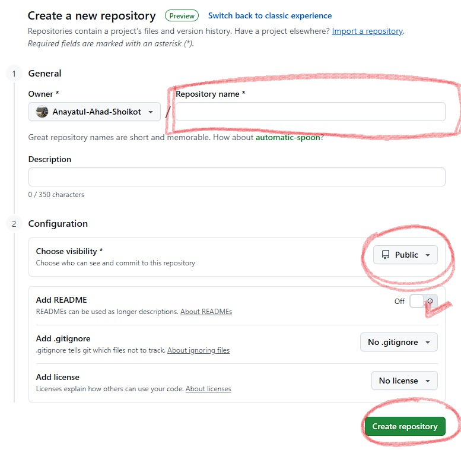
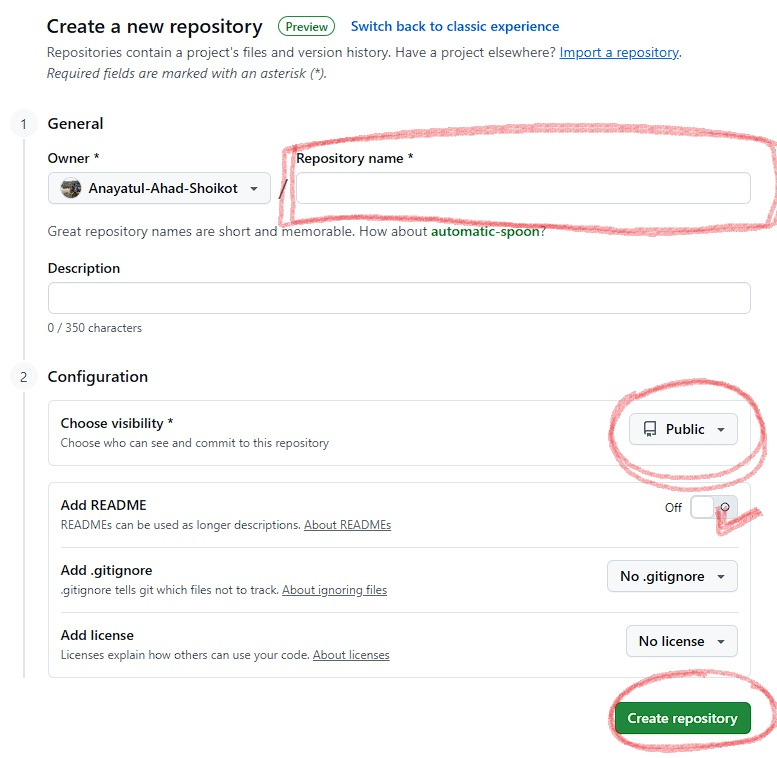

Project: From local PC to Github Repository
Scenario :
Let's say you have created a project in any folder in any drive. This can be any project. Now what you are trying to do is upload (push) this new project folder into your github account that is not yet in your git account. I'm assuming you have already a github account and you have installed, configured your git in local machine. Let's see how we do this.
Steps :
- 1. Go to your root project folder and open terminal
-
2.
git init :Initializing git. In terminal write [git init] and press enter; telling git that start watching this folder. It will create a .git hidden file in your directory - 3. After that, go to your github account and create a repository there. Copy the repository link
-
 


-
4.
git remote add origin [your_git_repo_link] :This will link your github account with this project folder. This command only need to execute one time. we don;t need to link every time we work on this project. -
5.
git add . :It will tell git detect and collect all the changes you have made to your project, this is knows as staging. ( you can specifically tell git any file by writing file name or put (.) for all. Lets say you want to stage your index.html - then the comand will be git add index.html ) -
6.
git commit -m [any note] :This command will save all the changes into your local machine into .git file. But not in the cloud (github account). -
7.
git push -u origin main :This command will uploads the changes into your github account in main branch by default.